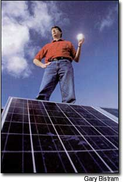
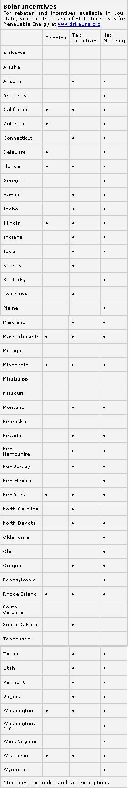

Plug Into The Sun
Install a solar electric system and cash in on the savings.
By Rusty Haynes and Lindsey Hodel
August/September 2003
Just last June, Mill Valley, California, resident Greg Simon threw his first "10 Megawatt" bash, celebrating his solar electric system's generation of more than 10 million watt-hours of sun-powered energy.
But Simon had more to celebrate than the satisfaction of making his own electricity. A savvy solar shopper, he had taken advantage of several state and county renewable energy rebate programs, which he says cut the cost of his system in half and saved him almost $23,000. Although Simon's 4-kilowatt photovoltaic (PV) system cost $43,000, he immediately received $18,000 in rebates from the California Energy Commission (at $4.50 per watt). He also received state credits totaling $4,000 and a $300 rebate from the county's alternative energy program. When all was said and done, Simon says he paid less than $20,000 - less than the cost of a new car! - for his renewable energy system. And, the savings haven't stopped there: When his electric production exceeds his consumption, Simon's net-metering contract with the utility allows him to sell the excess energy back to the grid and realize a credit on his bill.
SAVE ON SOLAR, NOW
In recent years, renewable energy systems have become less expensive and more practical, and many states have begun to sponsor substantial solar incentive programs, especially for solar electric systems. The federal government offers several financial incentives for renewable energy systems, but most of these are not available to homeowners. Many states, on the other hand, offer a wide and creative assortment of incentives for homeowners, as well as businesses, schools, industries and other groups. State-level programs include rebates, tax incentives, loans and net metering.
The Database of State Incentives for Renewable Energy (DSIRE) Web site ( www.dsireusa.org ), a free resource funded by the U.S. Department of Energy, provides detailed information on the programs discussed below.
REBATES
Eleven states offer at least one rebate program for various residential renewable energy technologies: California, Colorado, Delaware, Florida, Illinois, Massachusetts, Minnesota, New York, Rhode Island, Washington and Wisconsin. (Utilities in 13 states also provide rebates.) Massachusetts, New York and Rhode Island offer up to $5 per watt for residential or commercial PV systems. And California gives homeowners and businesses a rebate of up to $4.50 per watt for various renewable energy technologies, including photovoltaic and wind systems. Delaware provides to homeowners and businesses a rebate of up to 35 percent of the cost of PV, wind, solar hot water and other renewable energy systems.
In Illinois, most sectors including homeowners and businesses - are eligible to receive a rebate of $6 per watt for PV systems. In July 2001, Rita Knorr installed a 3,400-square-foot PV system on the rooftop of her three-story commercial apartment building in the heart of Chicago. She says she made the transition to solar power because she felt the need to start giving back all the energy she uses. "I have always been a believer that renewable energy is the way we should go," she says.
Knorr received a rebate for 40 percent of the costs of her PV system from the Illinois Department of Natural Resources. The total cost was about $10,000.
TAX BREAKS
Twenty states offer at least one personal income tax incentive to promote the adoption of renewable energy. The best personal tax incentives are available to residents of California and North Carolina. California offers a generous credit to homeowners of up to $4.50 per watt for the cost of PV and wind systems, and homeowners can deduct the interest paid on loans used to purchase renewable energy systems. North Carolina's 35 percent tax credit for the installation of all renewable energy systems includes a maximum credit of $10,500 for residential PV systems and $1,400 for solar hot water systems.
In New York, homeowners are eligible for a 25 percent credit for the cost of a PV system, with a maximum credit of $3,750. Maryland homeowners are allowed a 15 percent credit ($2,000 maximum) on PV and solar hot water systems, while those who purchase wind or PV systems in Rhode island are eligible for a personal credit based on system type and cost. Hawaii gives purchasers of PV and solar hot water systems a 35 percent credit ($1,750 maximum) and purchasers of wind energy systems a 20 percent credit (no maximum limit). Arizona (25 percent credit, $1,000 maximum), Massachusetts (15 percent credit, $1,000 maximum) and North Dakota (15 percent) all offer personal tax credits to those who purchase PV, wind or solar hot water systems. Idaho refunds up to 40 percent of the total cost of various renewable energy technologies, including PV, wind anti solar hot water. And 26 states have adopted corporate tax incentives to encourage renewable energy use in the business and industrial sectors.
Todd Volkmeier, a homeowner in Woodbury, Minnesota, paid no sales tax and no additional property taxes on the 10 PV panels he installed on his rooftop. Volkmeier's system provides 1.6 kilowatts of electricity and meets about one-third of hiss home's energy needs. His system also is grid-connected and allows for net-metering
"[The grid-tied system] is a simple system," Volkmeier says. "The only drawback is that if there's a utility outage - even if it's sunny out - like everyone else, we still won't have power."
(Grid-connected photovoltaic systems routinely have a disconnect that activates when the rest of the grid goes down to ensure the safety of utility line workers.)
Volkmeier was the first homeowner in the state of Minnesota to receive a rebate for switching to solar energy. The total cost of his PV system was $8,500, $3,300 of which the state reimbursed.
"I would rather have a windmill," he says, "but we live in a suburban area and city codes would never allow it. PV is something I can do and it's my way of contributing."
LOANS
NET METERING
A fourth type of financial incentive many states have adopted is net metering, an arrangement that permits owners of renewable energy systems to "sell" any excess power back to the electrical grid to offset consumption. Net-metering policies, which vary widely from state to state, are considered critical to the development and adoption of renewable energy technologies. In the past, most solar electric systems were not connected to the grid, but relied on batteries to store energy for use at night or during cloudy days. By using the utility grid as a giant battery to store excess energy, net metering alleviates the need for expensive batteries and directly affects the economics and payback period for the investment. Thirty-eight states and the District of Columbia have implemented statewide net metering policies, whereas some utilities in four states (Colorado, Florida, Illinois and Kentucky) have net-metering arrangements.
In Chicago, Knorr has established net metering through her local utility company. In the summer when her electricity use is lower, she pays only half of what she did before installing her PV system. In the winter, her electricity bill has decreased 10 percent to 20 percent.
Thirteen states are still without net-metering policies: Alabama, Alaska, Kansas, Louisiana, Michigan, Mississippi, Missouri, Nebraska, North Carolina, South Carolina, South Dakota, Tennessee and West Virginia.
OTHER PROGRAMS
Other state-level policies - especially public benefit funds and renewable portfolio standards can play a key role in developing the market for renewable energy. Typically created through a state's electric utility restructuring process, a public benefit fund is a state-level program to assure continued support for renewable energy resources, energy efficiency initiatives and low-income support programs. These funds are commonly supported through a small surcharge on all electricity bills.
Fifteen states have funds that support renewable energy resources: California, Connecticut, Delaware, Illinois, Maine, Massachusetts, Minnesota, Montana, New Jersey, New York, Ohio, Oregon, Pennsylvania, Rhode Island and Wisconsin. Many of these states' rebate and loan programs for renewable energy (some of which are discussed above) are funded by public benefit funds.
A renewables portfolio standard typically requires that a state's investor-owned utilities generate a certain percentage of their overall capacity for electricity sales from renewable energy sources. For example,
California's standard requires that the state's utility companies generate 20 percent of their power from renewable energy by 2017; Nevada's standard requires 15 percent by 2013 and Connecticut's standard requires 13 percent by 2009.
Renewable portfolio standards also vary widely among the 15 states that have adopted them thus far, especially in terms of the types of renewable energy sources eligible, the percentage of renewables mandated, the time frame specified, and the inclusion (or exclusion) of existing renewable systems.
SOLAR SOLUTIONS
Currently, solar power supplies less than 1 percent of our country's electricity. According to the National Renewable Energy Laboratory, California tops the charts in installed PV power, followed by Arizona, New York and Texas.
A study by Greenpeace indicates that if only 1 percent of the 105 million households in this country each installed a 480watt solar system (at an approximate cost of $5 per watt, or $2,400), between 500,000 to 700,000 megawatt-hours of electricity - the equivalent of burning 478 million pounds of coal - could be generated annually. This transition also would prevent between 678 and 910 million pounds of carbon dioxide emissions from entering our air. Greenpeace estimates that this small switch to solar would potentially create more than 15,000 new "green" jobs.
More than any other renewable energy option, solar power offers the most in terms of sustainability, self-reliance and security. There's no better time than the present to take advantage of government incentives and invest in a home solar system. You can help the world shift to saner, more sustainable energy practices, and you'll never worry again about high electric bills.
Four Steps to Empowerment
If your state's policies promoting renewable energy fail to impress you, there are several courses of action you can take:
1. Lobby your elected state officials and encourage them to support renewable energy. I worked as a legislative assistant in a past life, and yes, elected officials at the state level usually do read their mail and e-mail - although they may not have time to answer all of it. There is indeed power in numbers; the more mail - and the more people who send it - the merrier. (If you do not know who your elected officials are, visit www.vote-smart.org to find out their names and contact information.)
2. Stay informed of developments in renewable energy incentives and policies in your state and other states by visiting the Database of State Incentives for Renewable Energy (DSIRE) Web site (www.dsireusa.org ), which is updated weekly. DSIRE is especially useful for comparing state policies and tracking regional policy trends.
3. Get involved with existing renewable energy organizations. Organizations can play key roles in developing public policy by means of persistent lobbying and assertive participation in relevant meetings. You can find out more about local or statewide renewable energy organizations by contacting your state energy office (www.naseo.org/members/states.htm) or visiting energy.sourceguides.com, For information on state - and local-level Million Solar Roofs partnerships, visit www.millionsolarroofs.com/partnerships_statelocal.
4. Read the newspaper and write columns or letters to the editor when appropriate. Since Sept. 11, 2001, many columnists and publications have called for an "energy revolution" in the United States and abroad. Momentum has remained high, and policymakers seem to be getting the point.
- Rusty Haynes
Rusty Haynes works as a policy analyst at the North Carolina Solar Center at North Carolina State University, where he researches and analyzes state-level renewable energy and energy efficiency policy, and coordinates various communication and outreach efforts.
 JEFF VENDSEL/MARIN INDEPENDENT JOURNAL Greg Simon soaks up the sun on top of his solar-powered home in Mill Valley, California. Simon took advantage of the generous solar rebates California offers and saved more than 50 percent on the costs of his photovoltaic system. |
 GARY BISTRAM Todd Volkmeier of Woodbury, Minnesota, plugged in to his state's solar tax ncentives and saved thousands. Minnesota's net-metering law also allows him to send his system's surplus energy back to grid, shaving dollars and cents off his electric bill. |
 |